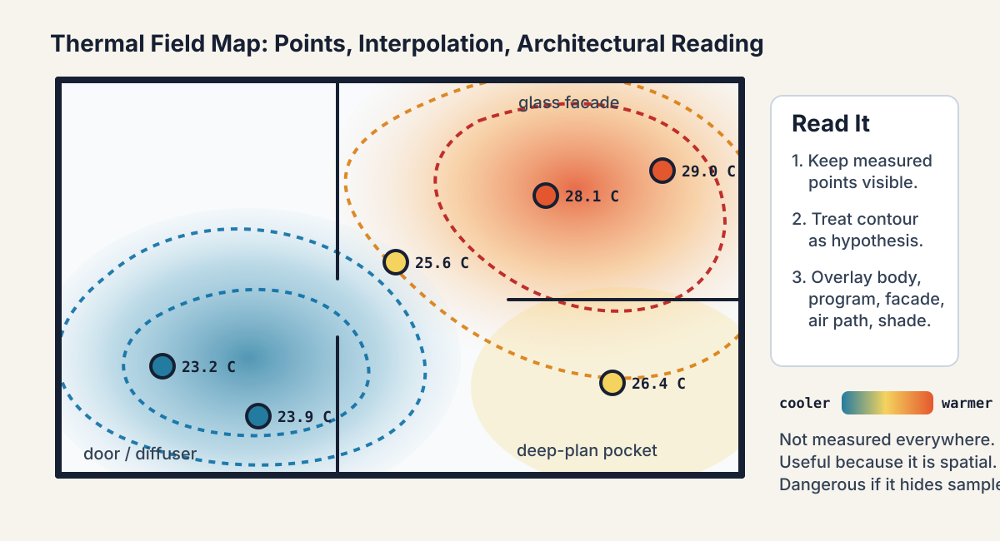

Environmental sensing, sampling bias, and spatial difference
Environmental sensing and uncertainty
A measurement is a design decision
A1 due field protocol
A1 spatial air field
A2 radiant exchange
A3 temporal build-up
A4 design action
The sensor does not simply reveal the thermal field. Its location, height, interval, shielding, calibration, and missing variables shape the field we think we saw.
Weak claim:
“I measured the room and it was 27 C.”
Architecturally useful claim:
“At seated height, the facade-side desk was 1.8 C warmer and 6% RH higher than the interior desk between 14:00 and 15:00; I did not measure MRT or air speed.”
Spatial differential:
\[ \Delta T_a = T_{a,\text{facade}} - T_{a,\text{interior}} \]
Humidity differential:
\[ \Delta RH = RH_{\text{facade}} - RH_{\text{interior}} \]
| Sampling choice | Bias introduced | Better question |
|---|---|---|
| one point | hides gradients | where is the body? |
| one hour | hides sequence | when is the claim true? |
| one height | hides stratification | breathing zone, ankle, head? |
| no surface reading | hides radiant difference | what is the body facing? |
| no air speed | hides convection | is there a path or stagnant pocket? |
| no occupant note | hides activity and expectation | who is the thermal subject? |
Humidity evidence can look simple and still mislead.
| Practice | What it captures | What it may miss |
|---|---|---|
| one room RH reading | general air moisture at the sensor | facade/corner gradients, surface condensation, closets |
| Ta/RH pair at occupied height | local air state for a body | air speed, MRT, material moisture, sensor lag |
| dew-point check near cold surface | condensation plausibility | whether wetting persists long enough for damage |
| repeated transect | spatial pattern and repeatability | hidden cavities, maintenance behavior, episodic moisture |
| data logger over days | temporal build-up and drying | exact source of moisture or airflow path |
For A1, RH is useful because it sits beside Ta and air movement. It is not a complete mold, material, or health diagnosis by itself.

The contour map makes spatial relevance legible. It also makes uncertainty easier to hide if the sampled points disappear.
A field value between sensors is estimated:
Common routes:
Do not present a smooth contour as measured fact. Say how it was made and where the samples are sparse.
Minimum: measured or curated points on plan/section.
Stronger: contour or heat map with points still visible.
Best: contour plus architectural overlay: body position, program, facade, opening, diffuser, shade, or material.
Air speed near a body can change quickly by position, height, posture, opening state, fan setting, and diffuser direction.
For A1-level evidence, acceptable descriptions include:
Do not average away airflow. A draft at ankle height and still air at face height are different occupied conditions.
A useful ventilation intuition:
\[ \text{well ventilated room} \not\Rightarrow \text{well served occupied position} \]
Air can short-circuit, bypass the body, stagnate in corners, or create a local draft.
This is why sensing locations are architectural choices. The question is not only “how much air enters?” but “where does it go, what does it carry, and who receives it?”
Increasing outdoor air can make a space feel fresher by diluting odors and pollutants.
But the same move can:
For your case, separate the claim into two lines: one about thermal condition and one about perceived air quality.
CO2 is useful as an occupied-space ventilation proxy, but it is not a thermal comfort variable by itself.
A simple room concentration intuition:
\[ \frac{dC}{dt} \approx \frac{G}{V} - \lambda(C-C_{out}) \]
G is occupant generation, V is room volume, and \lambda is effective air exchange or removal.
| Claim | What it says | What it does not prove |
|---|---|---|
| lower CO2 | more dilution or fewer occupants | good thermal comfort |
| higher air speed | stronger local convection / evaporation | enough fresh air |
| higher outdoor air | more ventilation potential | lower humidity load in Hong Kong |
acceptable Ta/RH |
air-state comfort may be plausible | good IAQ or low exposure |
A1 can mention CO2 or IAQ if it matters to the case, but the assessed claim remains thermal: air, moisture, movement, body position, and evidence limits.
The course can incorporate a SMART-style radiant sensing module when hardware is available.
The key architectural payoff is not the device itself. It is the ability to compare:
Sensor sophistication does not remove uncertainty. Better sensors make uncertainty more visible and more specific.
Indoor
Facade-adjacent seat, studio corner, roof-exposed room, atrium edge.
Threshold
Corridor-door condition, lobby edge, shaded arcade, balcony.
Outdoor
Courtyard, walkway, bus stop, roof terrace, playground edge.
Thermal fields cross architectural boundaries. A shaded threshold, ventilated lobby, or hot pavement can change the meaning of the adjacent room.
COVID-era ventilation debates made one thing obvious:
one average room condition can hide local exposure.
Thermal sensing has the same warning. A well-mixed assumption may be useful, but it should be questioned near facades, atria, courtyards, doors, fans, and heat sources.
Simple air-change intuition:
\[ \text{exposure} \neq \text{room average} \]
The person occupies a position, not an abstract zone.
Your A1 must include:
Ta and RH values or a clearly labeled curated sample data set;Defensible:
The facade-side desk was warmer and more humid than the interior desk during this measured hour.
Not yet defensible:
The facade design makes the studio thermally uncomfortable all semester.
The second statement may become defensible later, but only after radiant evidence, temporal evidence, and stress-window evidence are added.
10 min - case scan. Choose a design where sensing could become part of the design logic, not just a temporary survey.
5 min - Slack post. Post the image and state the use condition. Do not reveal where you would place sensors.
20-25 min - round-table guesses. Classmates guess where sensors should go, what they would miss, and what discipline would resist the sensor placement.
10-15 min - host reveal. The host explains the sensing protocol, what the design can accommodate, and what evidence would remain invisible.
Generous, but now tied to evidence quality.
Guess through these tensions:
For one class guess, translate the sensor placement into a design decision:
Write a sensing statement:
I would place sensors at
_____because_____; the likely blind spot is_____.
Next week we add surfaces, solar exposure, and mean radiant temperature.
A1 gave us air and humidity. A2 asks what the body sees radiantly.